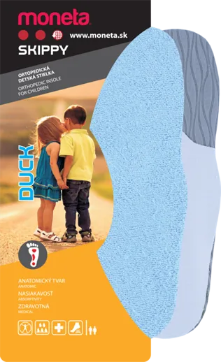

Детски анатомски влошки, 100% памук, латекс, пластичен и карбосан калап.
Детски анатомски влошки, 100% памук, латекс, пластичен и карбосан калап.

Горниот слој е изработен од мек памучен фротир кој обезбедува пријатен контакт со стапалото и дополнителна удобност при носење.
Латекс пената придонесува за меко чувство при чекорење и помага обувките да останат попријатни за носење.
Влошката е дизајнирана со анатомски обликувани елементи за природно прилегање и стабилност при секојдневни активности.
Во делот на петата е вградено меко перниче кое придонесува за дополнителна удобност при чекорење.
Duck е наменета за деца чие стапало е активно во раст, приближно од 5 до 12 години, во зависност од големината на стапалото (27–35).
Да. Влошката е изработена од 100% памук и хипоалергенски материјали, безбедни и нежни кон детската кожа.
Анатомскиот пластичен и карбосан калап обезбедуваат суптилна поддршка на сводот, што може да помогне при правилен развој на стапалото. За специфични состојби, консултирајте се со педијатар или ортопед.
Избришете ги со влажна крпа и благ сапун или нежно измијте ги на рака на ниска температура. Оставете ги да се исушат природно на воздух.
Детските стапала секојдневно поминуваат низ многу активности – игра, трчање, училиште, спорт и прошетки. Затоа е важно обувките да бидат удобни и правилно прилагодени на големината на детското стапало. При избор на влошки, обрнете внимание на неколку едноставни критериуми:
Влошката треба рамномерно да прилега во обувката без да се витка или да создава дополнителен притисок.
По поставувањето на влошката, обувката треба да остане удобна за носење и да не биде претесна.
Материјали како памучен фротир и латекс пена придонесуваат за пријатно чувство при секојдневното носење.
Доколку детето лесно се движи, нема чувство на непријатност и обувките му се удобни, тоа е добар показател дека влошката соодветно прилега.
Бидејќи детските стапала растат брзо, препорачливо е повремено да проверите дали обувките и влошките сè уште одговараат на нивната големина.
Добра практика е повремено да ја проверувате состојбата на влошките. Размислете за замена ако:
Детските влошки се наменети за подобрување на удобноста при носење обувки. Тие не се медицински производ и не се наменети за дијагностицирање, лекување или превенција на медицински состојби. Доколку имате прашања поврзани со здравјето или развојот на детските стапала, консултирајте се со квалификуван здравствен работник.